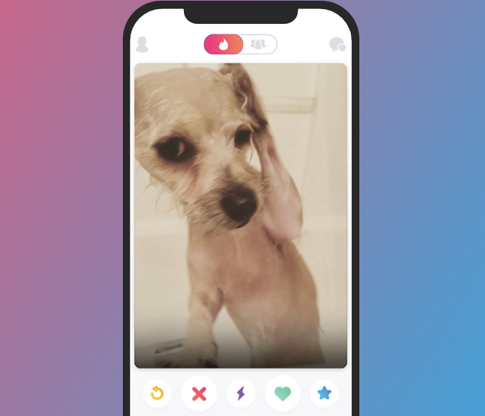
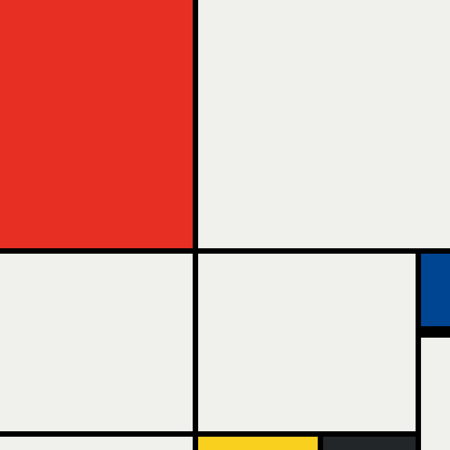

TinDog Project
Aug 14
indog is a playful project that mimics Tinder for dogs, allowing users to practice web development by creating a responsive, dog-themed dating app.
Review

Modrian Project
Aug 1
The Mondrian Project in web development is a layout design inspired by Piet Mondrian's art, using CSS Grid to create a clean, geometric grid of colorful, block-like elements.
Review
